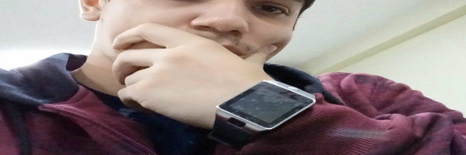

Intro

Começou na área de tecnologia desde muito cedo através dos games eletrônicos, desde então se apaixou por este ramo no qual decidiu construir sua carreira profissional.
Teve seu primeiro contato com linguaguem de programação em 2013(aos 16 anos de idade), começou pelo pascal passou por HTML, CSS e JAVASCRIPT(jquery) também aprendeu linguagens de baixo nivel como: C,C++,C#, PHP.
Encontrou a linguagem JAVA em 2014-2015 no qual se focou totalmente e desde então vem se aprimorando em suas bibliotecas e tecnologias como JAVA SE, JAVA EE e em frameworks como Spring MVC e Spring Security entre outros.
Projetos

Notion
Um software para web focado na analise de dados, pertencente a datacrunch no qual Eduardo Asafe e um dos fundadores.
VisualLog
Sistema responsável por gerir os Logs dos diversos softwares de uma empresa privada
Entre outros projetos...
Sobre mim...

Atualmente é estágiario de desenvolvimento na empresa Nova Tecnologia(Grupo NT) colaborando com setor de teste e implementações(SEITE)
É acadêmico de Sistemas da Informação pela faculdade Mauá.
Contatos
Quer saber mais sobre mim? envie-me um email ou me acompanhe pelas redes sociais =D
Email: asafe.eduardo@gmail.com
Telefone: (61) 995045995
Twitter: @Dudu_asafe
Instagram: asafe.eduardo